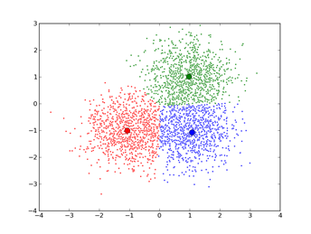

一、概述
机器学习中一般是针对决策规则、概率理论、近邻、集成、增量、图论等原则进行算法的设计。本文选取利用近邻原则的相关算法进行总结。
所谓”近朱者赤，近墨者黑”，相近的两个对象一般相似度较大。机器学习十大算法中运用近邻原则的算法主要有：KNN和Kmeans两大类。
二、KNN算法
-
算法描述
KNN算法的主要思想是在实例集DTrain中取与待分类样本S最近的K个样本，根据K个样本所属分类，投票决定S的分类及对应的可能性。
-
算法伪代码，用TreeSet实现
分别计算S与实例集DTrain中样本的距离，取最近的K个样本。//一般用小根堆进行。
分别统计K个近邻中出现的类别及数量。
取最多的一个类别，输出。
-
算法缺点
实例集DTrain的选取很关键，太多冗余、样本不均匀或者噪音将导致分类失效。
计算量太大，每次分类都需要遍历实例集。
K值的选定需要人为干预，并且K值影响分类效率。
实例集的样本必须存储。
-
改进策略
-
实例集DTrain的生成；
等比例抽样法，基于样本空间的抽样法，避免样本不均匀。
根据样本的有效性，剔除作用较小的样本。
-
距离的计算：样本相似度的计算；
欧氏距离；余弦相似度。
编辑距离（文本处理）
-
K值的选择
设定一个K值的初始值，然后以一定步长递增或者递减。选取一个较好的K值。
-
K近邻的搜索；
对样本进行组织整理，分层分群，尽可能将计算压缩到一个较小的样本子空间，避免盲目地与训练集中的每个样本进行比较。
快速搜索近邻算法
将样本集按近邻关系分解成组，给出每组的质心以及组内样本到该质心的最大距离。这些组又可以分层次结构，组分子组等。最终逐渐深入到一个较小的子组中。减少了计算量，但没有达到减少存储量的目的。
剪辑近邻法
利用现有样本集对其自身进行剪辑，将不同类别交界处的样本以适当方式筛选，可以实现既减少样本数又提高正确识别率的双重目的。
剪辑过程：1将样本分成两个独立的子集D1，D2；2.对D1的每个样本S1，找到其D2中的最近邻SD2，如果它们的分类不一致，则从D1中删除S1；3.最终的D1替代样本集。
压缩近邻法
压缩方法：1.初始化两个集合D1=Null，D2=D。在D1中任选一个样本加入D2中。2.依次取D2中的样本，用D1中的样本集对其进行近邻分类，若分类正确则跳过该样本，若分类错误，则将该样本加入到D1中，并且从D2删除该样本。3.重复2，直到D2为空，或者D2中已经没有样本加入到D1中。
-
K近邻的投票策略
距离作为权值进行投票：距离小，权重越大。
考虑所有样本中每个分类的比例，比例越大反而在投票中权重越小。
考虑近邻的K近邻与该近邻相同类别的比例作为该近邻的权重。
TCMKNN：基于直推信度机的KNN算法；
信度定义T（y）：样本所属分类的K个近邻距离和/样本所属分类外的K个近邻距离和。信度越小，表示样本越满足近邻特性。
样本属于某个分类的概率P：令样本属于该分类；计算信度TY，统计分类中的所有样本信度大于TY的个数countY，countY/y的样本总数即概率P，概率越大，越可能属于该分类。
样本-分类概率最大的两个为P1，P2.样本属于P1类，且置信度为P1-P2.置信度越大，说明样本相对于其他分类越有可能属于该分类。
三、KMeans算法
-
算法描述
基本思想是将数据划分成若干个聚类，使得类内的相似度最大化，类间的相似度最小化。主要方法是初始随机给定的K个簇中心，按照近邻原则把待分类样本点分到各个簇。然后按平均法重新计算各个簇的质心，作为新的簇中心。经过若干次迭代后，簇中心会收敛。

-
算法伪代码
1.初始化K个簇中心；2.将样本分配到k个簇；3.计算质心作为新的簇中心；4.重复2直到簇中心收敛到一个点。
-
算法缺点
要事先确定簇数K；
对初始聚类中心敏感；
容易陷入局部最优；
对”噪声”和孤立点敏感：噪声和孤立点，异常点容易影响质心的计算。
不适于发现非凸面形状的簇或大小差别很大的簇。——非凸面簇往往也是线性不可分的。可以用核函数，将原空间投影到高维空间。
-
改进策略
（1）k值确定
层次聚类：
凝聚法（将每个实例看做一个簇，将距离最近的簇合并成一个簇，并用质心代表该簇，当最最近距离达到某个阈值时停止聚类）；AGNES算法
分裂法（将所有实例集看成一个簇，簇内实例间最大值是簇的直径，将簇分解直到最大直径小于某个阈值）；DIANA算法
稳定性方法：
用两次重采样（任取一个节点加入D1，该节点最近邻加入D2，重复此过程）将数据集分成2个子集，这这两个子集做相同的聚类，产生K 聚集。K个聚集的相似度反应了聚类的稳定情况：相似度高，说明K值合理。否则需要增大K。
系统演化方法：
定义稳定状态的条件，例如聚类最大直径，聚类最小数量，最大数量，聚类实例数量限制等等。
定义不稳定状态：
将数据集视为伪热力学问题。从K=1出发，不断的分裂合并不满足条件的聚集，最终达到稳定状态。
Canopy算法初始划分：
将聚类过程分为两个阶段：
预处理阶段：初始一个实例，把所有相似的节点（满足一定距离条件）放到一个子集Canopy中，再从没有选中过的实例集中选取一个实例构造下一个canopy，直到所有实例至少被选中一次；这样一个实例可以属于多个canopy，canopy之间可以有重叠；
传统聚类阶段：在每个canopy中运用传统的聚类方式进行聚类。
（2）初始质心选取
随机选取法：
多次运行，每次选取不同的随机初始质心，去有最小SSE（误差的平方和）的簇集。
采用层次聚类预处理数据集，取簇集中心为初始质心。
随机选择一个点或选择所有数据集的质心作为初始点，然后选择距离该点最远的点作为第二个点，依次选择K个点。
Canopy算法第一阶段得到的每个canopy的质心作为初始质心。
（3）距离度量
欧几里得距离和余弦相似度。
欧氏距离需要标准化，距离越大差异越大。
余弦相似度不需要标准化，值在[-1,1]，值越大差异越小。
（4）质心计算
聚簇中所有样本的向量均值。
（5）算法停止条件
目标函数达到最优停止：欧式距离采用聚集的平方误差和（实例与质心的距离平方和）最小化；余弦相似度采用聚集余弦相似度和（到质心的余弦相似度）最大化。
（6）空聚簇的处理
方法一：选择一个距离当前任何质心最远的点作为空聚簇的质心。这个点在平方误差和中贡献最大。
方法二：从平方误差和最大的那个簇，选择距离该簇质心最远的点，作为空聚簇的质心。
（7）EM算法（搜索本站）：
实例可以属于多个聚簇，突破了聚簇间的差异要求，只要求聚簇内部达到一定的相似性。
四、运用案例
将Kmeans运用在Knn的近邻搜索中，用聚簇中心索引数据集。
五、参考资料
http://blog.csdn.net/qll125596718/article/details/8243404 Kmeans